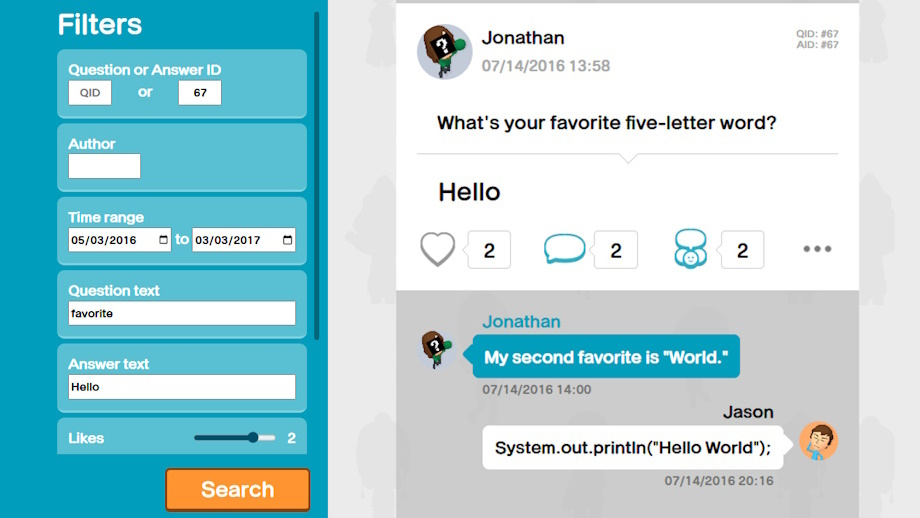

Development
Design
portfolio by Jason Moore

Miitomo Archive
Java
Python
JavaScript
HTML/CSS
PHP
Database
OCR
An archive of posts, replies, and images extracted from screen captures of a now-defunct social app game. The posts were restored using custom image processing algorithms and OCR to detect, extract, sanitize, and merge data from tens of thousands of video frames. more
Picnix
Java
Multithreading
Graphics
A picnic-themed Nonogram/Picross puzzle game developed from scratch in Java. Picnix is built from a robust and extensible custom game engine that handles user input, game threads, and graphics rendering all with built-in Java libraries. more

Turing Machine Simulator
Haskell
JSON
Theory
A command-line Turing machine simulator and visualizer written in Haskell. Create and load a machine from JSON, then run step-by-step to examine its operation or run continously see the resulting tape. more

Word Ladder
Kotlin
Android
Retrofit
AWS
PHP
A daily challenge word game written in Kotlin for Android. Complete the word ladder in as few steps as possible and submit your score to the leaderboard to see how you did. more
Minesweeper Rewritten
Java
Multithreading
Graphics
A recreation of classic Minesweeper written in Java in a day. It plays just like the original game, but with fresh animations and sound effects to add some unique flair. more